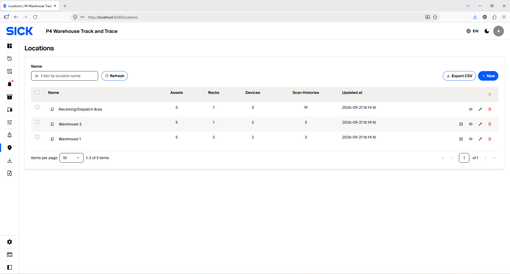
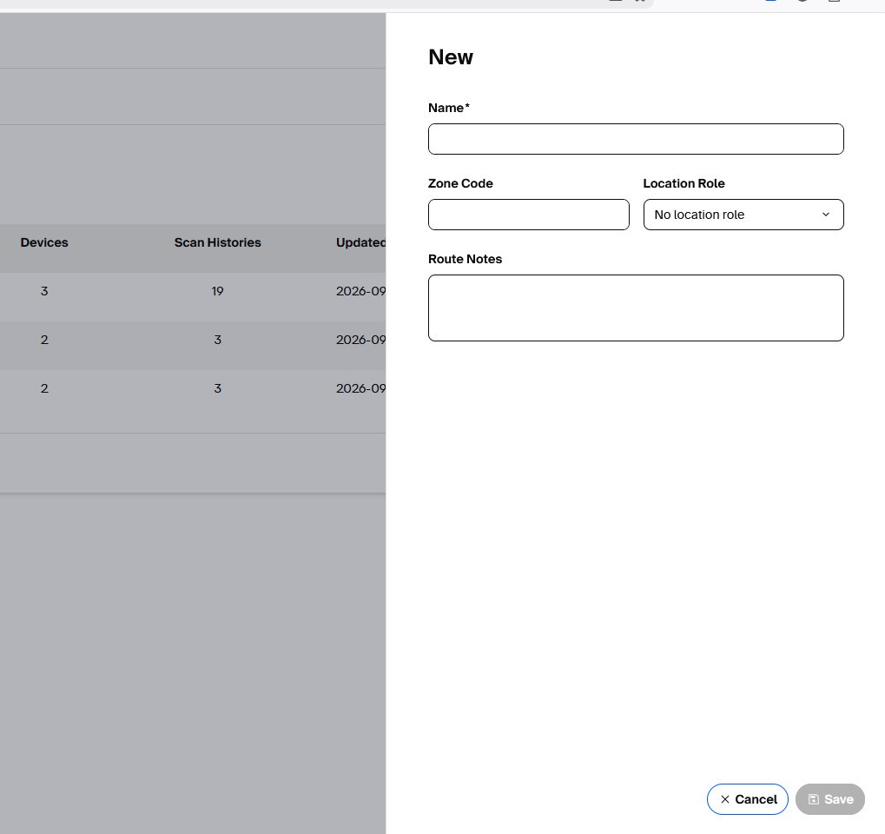
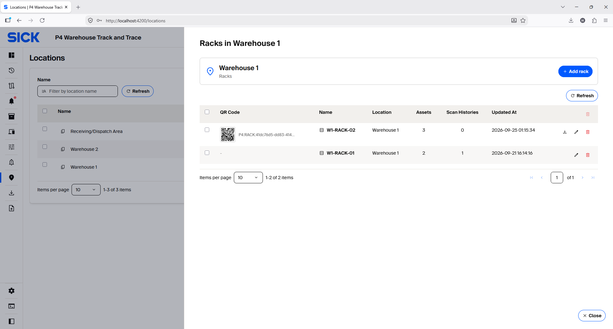
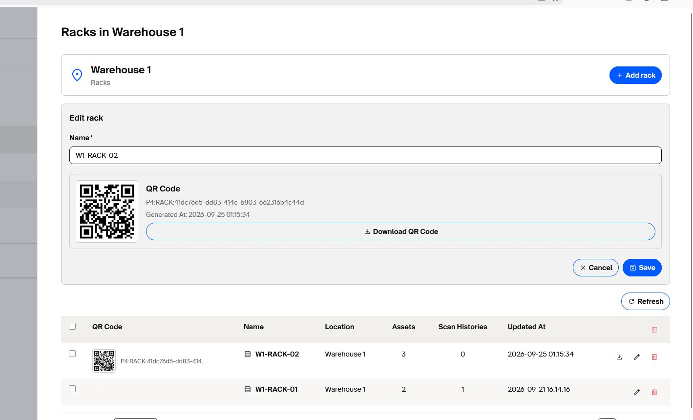

Locations & Racks
Configure operational Locations, Racks and Rack QR codes used by the tracking workflows.
Manage Locations and Racks

Create a Location
- Open Locations → New.
- Enter a clear Name, Zone Code and Location Role.
- Add Route Notes if helpful.
- Save. Zone Code must be unique.

Create a Rack and QR code
- Open a Warehouse Location and choose Racks.
- Select Add rack and give the Rack a unique name.
- Save; generate the Rack QR code.
- Download and print the QR code, then place it where the handheld scanner can read it reliably.


Print Rack QR labels using the A4 Word template
Use the included A4 Word template to print consistent Rack labels. Always replace its example QR with the QR generated for the actual Rack.
Download Rack QR A4 Word template (.docx)
- Create/save the Rack in Admin Web and generate its Rack QR code.
- Download the generated Rack QR image from the Rack configuration panel.
- Open the supplied Word template.
- Replace the example QR image with the QR code generated for the actual Rack.
- Update the visible Rack/level and Warehouse/Location text so it matches the physical installation.
- Print the A4 page clearly and attach the label where the handheld barcode/QR scanner can read it reliably.
- Before operational use, scan the printed label with Rack QR Search or Rack Stock Take and confirm that the expected Rack is resolved.